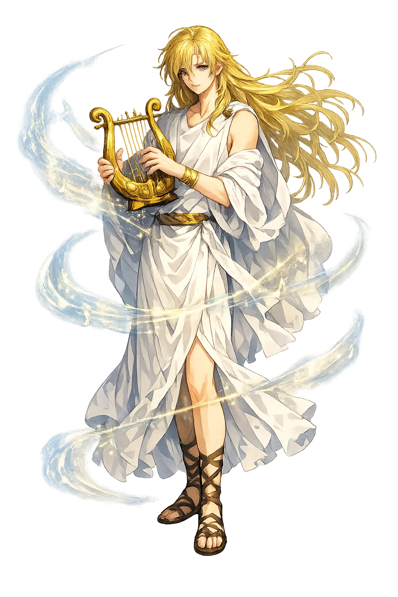
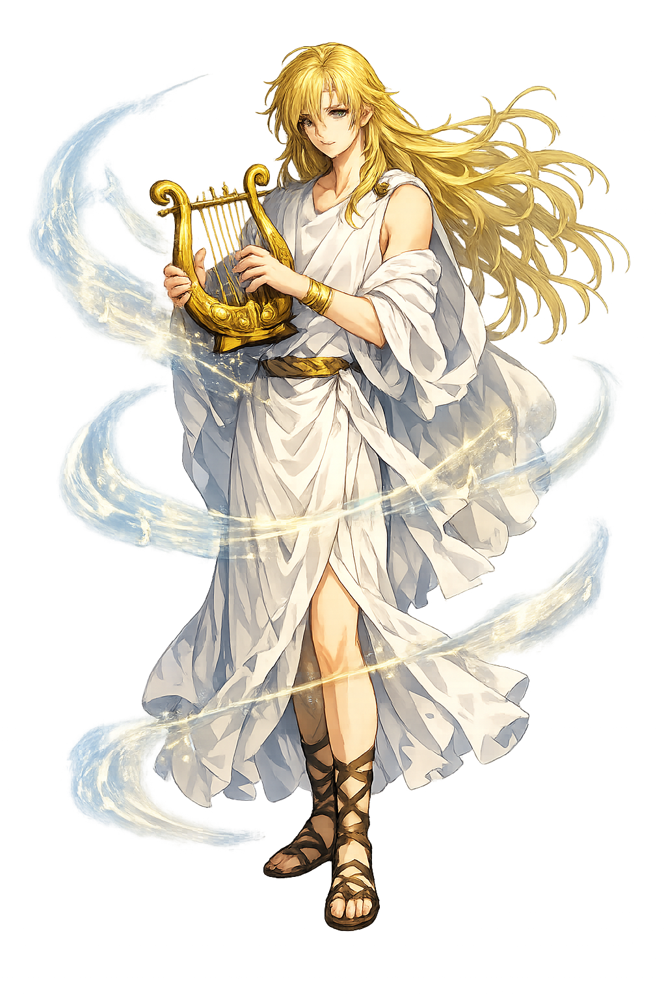

The Authentic Orthography
Poet, Musician, Underworld · The Singer of the World

Unicode restoration and ASCII comparison
Ὀρφεύς
The name in its original Greek form. Orpheús (Ὀρφεύς) is attested in the source tradition — “Darkness of the night”. Its aspirated consonants, diphthongs, and acute accents carry the full phonetic and orthographic weight of the source tradition.
orpheus
Reduced to plain orpheus, the name loses everything that made it specific: aspirated consonants, diphthongs, and acute accents. What remains is an ASCII string that machines can parse but that no longer speaks with its original voice.
Orpheús
The Unicode restoration recovers what ASCII flattened. Orpheús restores aspirated consonants, diphthongs, and acute accents, returning the name to its original written dignity. The domain encodes to Punycode, but the browser displays the truth.
Orpheús.com → xn--orphes-tya.com
The non-ASCII characters in Orpheús are encoded while the ASCII remains visible. To the DNS, it is Punycode. To humanity, it is Orpheús.
How Orpheús is preserved in writing
A bespoke provenance study for Orpheús is being prepared by the PUNICODEX scholarly team.
Contribute scholarly provenance →How Orpheús was spoken
Music, Poetry, the Descent, and the Lost Look Back
Orpheús is the archetype of art itself: the Thracian singer whose lyre moved stones and stopped rivers, who went down living into the underworld for his wife, and whose single look back is the West's permanent parable of love and loss.
His instrument: the gift of Apóllōn, the sound that made nature stop to listen.
His song steadied the Argo's crew past the Seirḗnes — art as navigation.
The katabasis for Eurydikē — the only route out of death that music ever opened.
The one forbidden glance, at the threshold — and the second, final loss.
Stories of Orpheús
Orpheús' myths are all about what music can and cannot do: it charms everything, and it saves nothing except itself.
The tradition is unanimous: when Orpheús played, the trees uprooted themselves to follow, the rivers halted, the wild beasts lay down beside the sheep. Simonides' line — "the birds flew above him, the fish leapt from the water" — is the oldest surviving witness. His mother was the Muse Kalliopē; his lyre, some say, Apóllōn's own gift: music as the one power that rivals the gods'.
Apollonius Rhodius gives him the heroic use: on the Argo, his song timed the rowers, calmed the quarrels, and — at the Seirḗnes' shore — drowned the death-song in a nobler one. He is the epic's proof that the hero's tool is not always the sword: the Argonauts' most dangerous passage was survived by a string, not a blade.
Eurydikē died of a snake's bite on their wedding day, and Orpheús did what no one does: went after her, alive. His song charmed Charon, Cerberus, and the Furies' whips to stillness; Hádēs himself relented — on one condition: she follows behind, and he must not look back until both stand in the light. At the threshold, he looked. She fell back, saying only "farewell." The West has been writing the sentence ever since: love almost defeats death — almost.
The Maenads of Dionysos tore him apart — for refusing their god, or their beds, the versions disagree. His head, still singing, floated down the Hebrus to the sea and came ashore at Lesbos, where it prophesied until Apóllōn silenced it; his lyre was set among the stars. Even dismembered, the singer does not stop: the myth's last mercy is that the song survives the man.
Orpheús is the patron of the almost. He got her back — almost. He sang the Furies to tears — and still lost. His question is the one every artist and every lover knows: when the rule is "do not look back," and the one thing you have is the looking — what are you willing to lose for one glimpse of what you love?
Enter Extended Lore